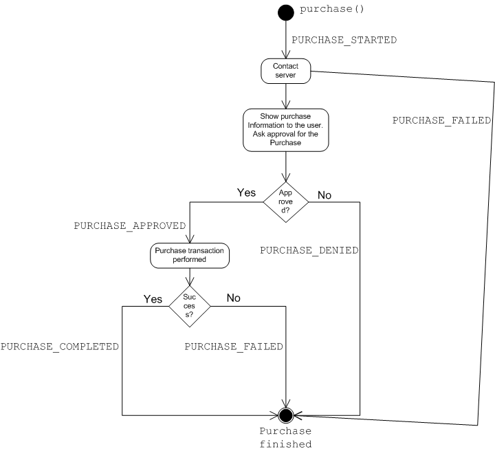

|
Copyright 2008 Motorola Inc. and Nokia Corporation. All Rights Reserved. Specification License |
||||||||
| PREV CLASS NEXT CLASS | FRAMES NO FRAMES | ||||||||
| SUMMARY: NESTED | FIELD | CONSTR | METHOD | DETAIL: FIELD | CONSTR | METHOD | ||||||||
public interface PurchaseObject
A PurchaseObject is used to purchase a Program, Service or service bundle.
SubscriptionManager is used to get access to PurchaseObjects. Once the application
obtains them, it can query their content, purchase them, or cancel the subscription.
Purchasing (subscribing) or canceling a subscription are similar operations.
PurchaseObjectextends ServiceGuideData, and its
methods can be used to query information about the purchase from the service guide. Following attributes of
CommonMetadataSet are always supported (meaning that if the implementation knows their values
they are exposed via those attributes to the application).
requestPriceOptions() method
which may connect to a remote server to fetch the pricing data.
As purchasing a service may come with different options (for instance, price varies by the length of the payment period)
the prices are presented by one or more PriceOptions. List of the options
can be queried by getPriceOptions().
The following describes the steps for the actual purchasing.
purchase(PriceOption) initiates the purchasing process, assuming the application has rights to do so in the first place.
At this point, PURCHASE_STARTED event will be posted and, after
a possible communication with the service provider,
the implementation shows a dialog to ask user confirmation for the purchase transaction. If the transaction was approved, PurchaseListener is notified
by PURCHASE_APPROVED event. In case the transaction was declined by the user,
PURCHASE_DENIED is posted to the listener.
The purchase transaction could be a complex process involving communications between the client and the service provider.
Therefore, it may take some time before the transaction is completed. When the transaction is successfully completed
PURCHASE_COMPLETED event is posted to the listener.
PURCHASE_FAILED is posted if the purchase failed for some reason. Notice that,
for instance, if the connection to the purchase server can not be instantiated this event can be posted before confirmation
from the user is accepted.
Diagram below depicts the events when purchase() method is called.

The flow of events is exactly the same when the subscription is canceled except that cancel() is called instead
of purchase(PriceOption) and the respective CANCEL_* events are posted instead of PURCHASE_* events.
PurchaseObject may become obsolete over time, for instance, because platform provider is changed. In that case,
most of the methods will throw IllegalStateException.
SubscriptionManager,
PurchaseListener| Method Summary | |
|---|---|
void |
addPurchaseListener(PurchaseListener listener)
Register a Listener to receive purchase events. |
void |
cancel()
Initiate the process to cancel the subscription of the Program, Service or service bundle for which this object was created. |
PriceOption[] |
getPriceOptions()
Get a list of different price options available for this PurchaseObject |
java.lang.String |
getPurchaseChannel()
Get the current purchase channel that is used for purchase requests. |
boolean |
isPurchased()
Check if the Program, Service or service bundle of this PurchaseItem is already purchased. |
void |
purchase(PriceOption option)
Initiate the process to purchase a Program, Service or service bundle for which this object was created. |
void |
removePurchaseListener(PurchaseListener listener)
Remove a PurchaseListener. |
void |
requestPriceOptions()
Get the description of the price of the Program, Service or service bundle to be purchased. |
void |
setPurchaseChannel(java.lang.String purchaseChannel)
Set or change the channel of the purchase system that should be used for purchase requests. |
| Methods inherited from interface javax.microedition.broadcast.esg.ServiceGuideData |
|---|
equals, getAvailableMetadataSets, getBooleanValue, getBooleanValues, getDateValue, getDateValues, getDoubleValue, getDoubleValues, getLongValue, getLongValues, getObjectValue, getObjectValues, getStringValue, getStringValues |
| Method Detail |
|---|
void addPurchaseListener(PurchaseListener listener)
listener - The listener that can receive eventsvoid cancel()
PurchaseListener.CANCEL_STARTED event.
When this method is called, the implementation will open a dialog showing the detailed cancel information
to ask for the user's confirmation for the transaction.
It's possible to call this method even if isPurchased() returns false.
Consequences are implementation and service provider specific.
java.lang.SecurityException - thrown if the user has no rights to make purchase transactions.
java.lang.IllegalStateException - if PurchaseObject is not valid any longer.PriceOption[] getPriceOptions()
PurchaseObject
PurchaseObject. The returned array
contains at least one PriceOption.
java.lang.IllegalStateException - if PurchaseObject is not valid any longer.java.lang.String getPurchaseChannel()
java.lang.IllegalStateException - if PurchaseObject is not valid any longer.boolean isPurchased()
java.lang.IllegalStateException - if PurchaseObject is not valid any longer.void purchase(PriceOption option)
PurchaseListener.PURCHASE_STARTED event.
When this method is called, the implementation will open a dialog showing the detailed purchase information,
like price and content, to ask for the user's confirmation for the transaction.
It's possible to call this method even if isPurchased() returns true. Consequences
are implementation and service provider specific and may vary from subscription renewal or continuation
to error situation.
option - Pricing option to be used for this purchase.
java.lang.SecurityException - thrown if the user has no rights to make purchase transactions.
java.lang.IllegalStateException - if PurchaseObject is not valid any longer.
java.lang.IllegalArgumentException - if option is not a valid option.
java.lang.NullPointerException - if option is null.void removePurchaseListener(PurchaseListener listener)
listener - The listener that can receive eventsvoid requestPriceOptions()
PRICE_INFO_RECEIVED is sent to PurchaseListener when the information
is available or PRICE_INFO_RECEIVAL_FAILED if it fails to receive the information.
This method returns immediately.
java.lang.IllegalStateException - if PurchaseObject is not valid any longer.void setPurchaseChannel(java.lang.String purchaseChannel)
Change of the purchase channel may affect, for instance, the price of the purchase.
Applications should always call requestPriceOptions() and show the possibly updated
information to the user after call to this method.
purchaseChannel - URI of the purchase system that should be contacted
java.lang.NullPointerException - if purchaseChannel is null.
java.lang.IllegalArgumentException - if purchaseChannel is not one returned by
SubscriptionManager.getSupportedPurchaseChannels().
java.lang.IllegalStateException - if PurchaseObject is not valid any longer.
|
Copyright 2008 Motorola Inc. and Nokia Corporation. All Rights Reserved. Specification License |
||||||||
| PREV CLASS NEXT CLASS | FRAMES NO FRAMES | ||||||||
| SUMMARY: NESTED | FIELD | CONSTR | METHOD | DETAIL: FIELD | CONSTR | METHOD | ||||||||